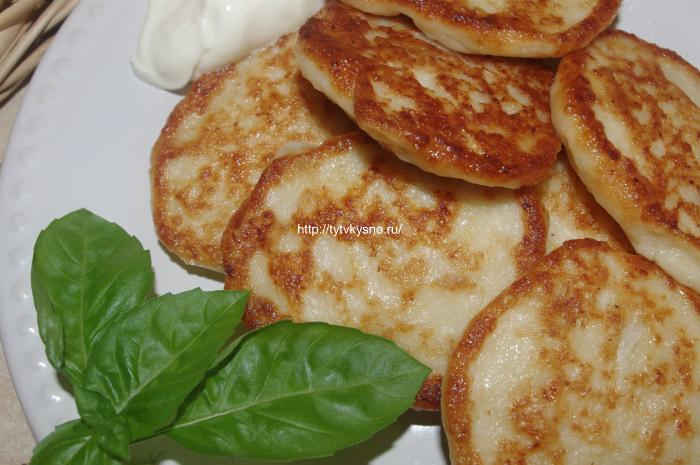
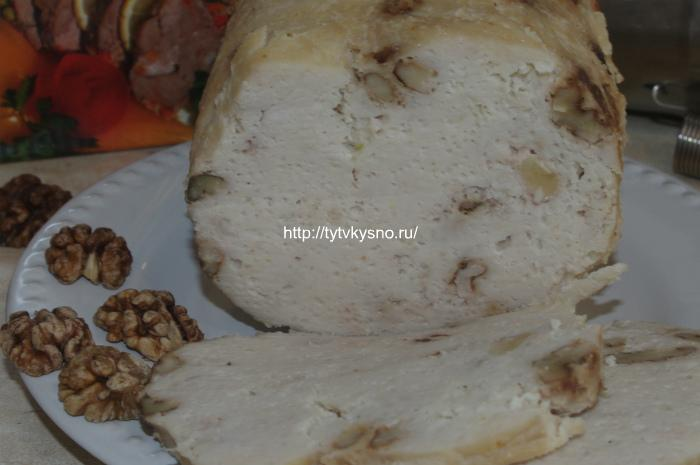

ЗАЛИВНОЙ ПИРОГ С ВИШНЕЙ (ЧЕРЕШНЕЙ)
Добрый день, уважаемые читатели, сегодня я расскажу вам, как можно легко и просто приготовить вкусный заливной пирог с вишней (черешней). Эти пироги я готовлю летом с разной свежей ягодой, а зимой с любой замороженной. Далее...
ОЛАДЬИ С ФАРШЕМ НА КЕФИРЕ
Добрый день, уважаемые читатели, сегодня я расскажу, как готовить оладьи с фаршем на кефире. Протестировала для себя три рецепта: с сырым фаршем, с жаренным фаршем и вариант ленивых беляшей. Фарш для рецепта можно брать любой, я же, как вы знаете, предпочитаю готовить из куриного. Далее...
work
Рубрика: БЛИНЫ, ОЛАДЬИ, НОВОСТИ
КОЛБАСА ДОМАШНЯЯ, ЗАПЕЧЕННАЯ В ВЕТЧИННИЦЕ БЕЛОБОКА, РЕЦЕПТЫ
Добрый день, уважаемые читатели ТутВкусно, если помните, я обещала рассказать вам, как готовится запеченная домашняя колбаса. А коме того раскрыть секрет: Далее...
work
Рубрика: ЗАКУСКИ, НОВОСТИ